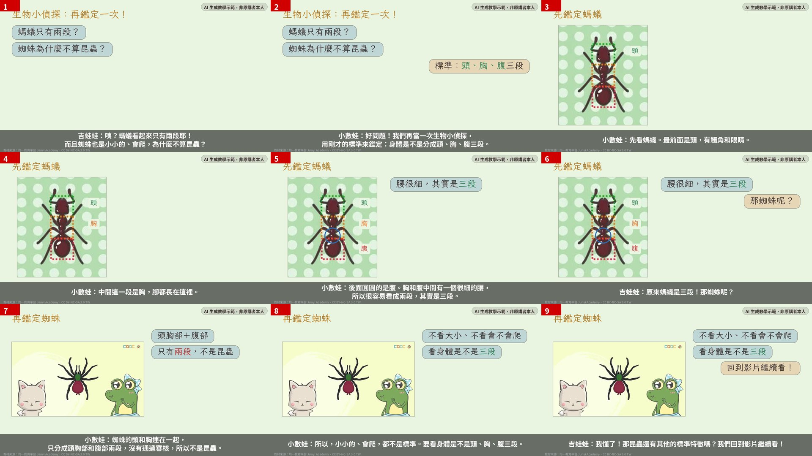
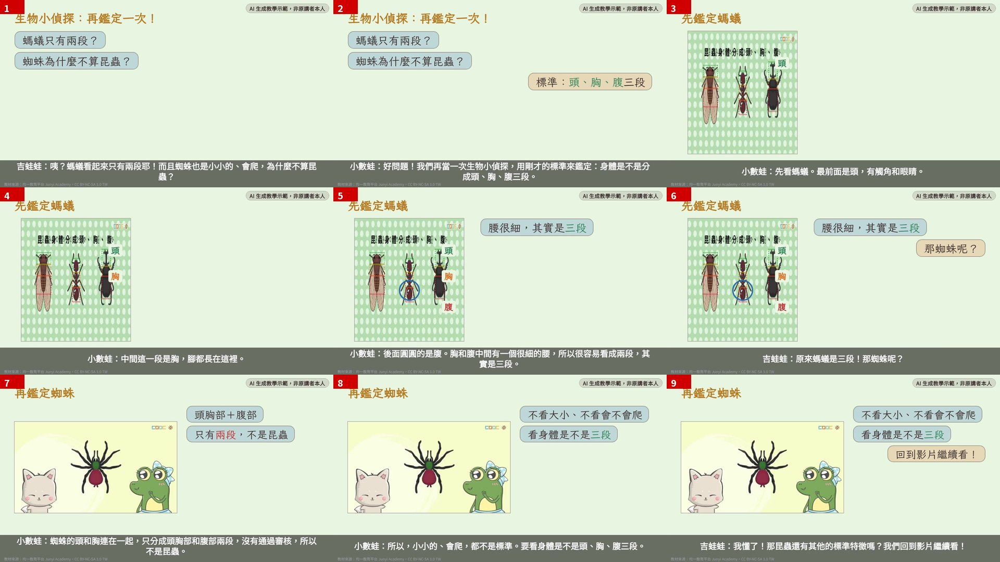
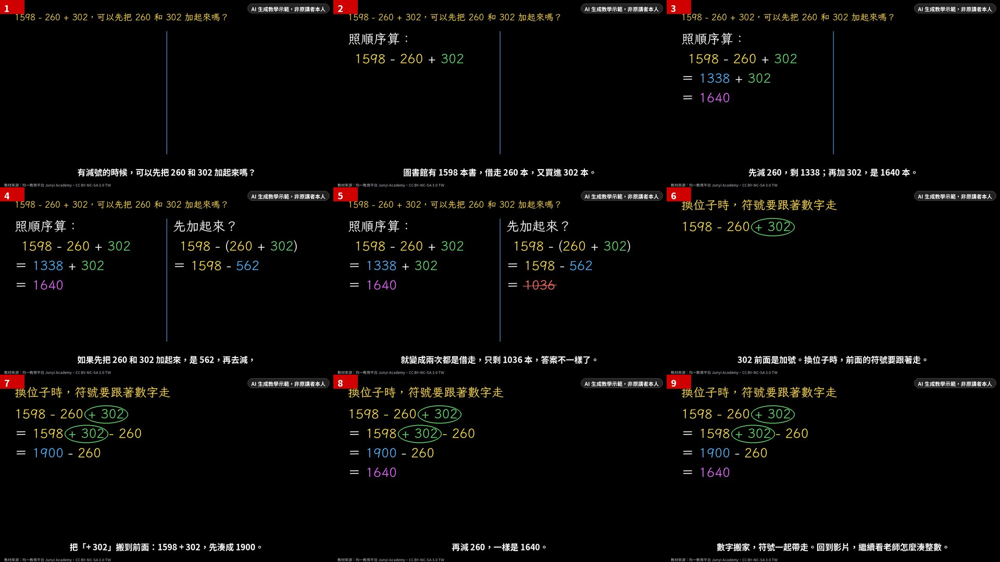
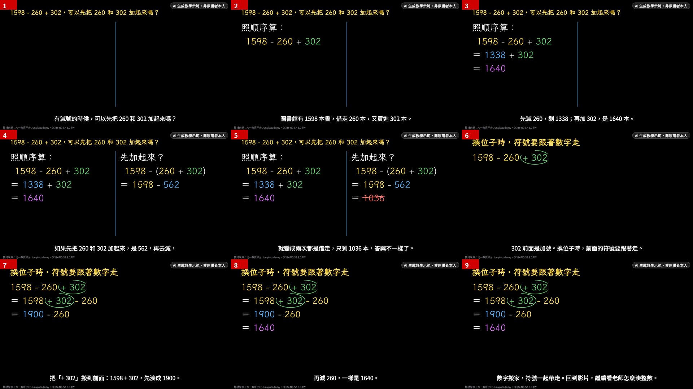
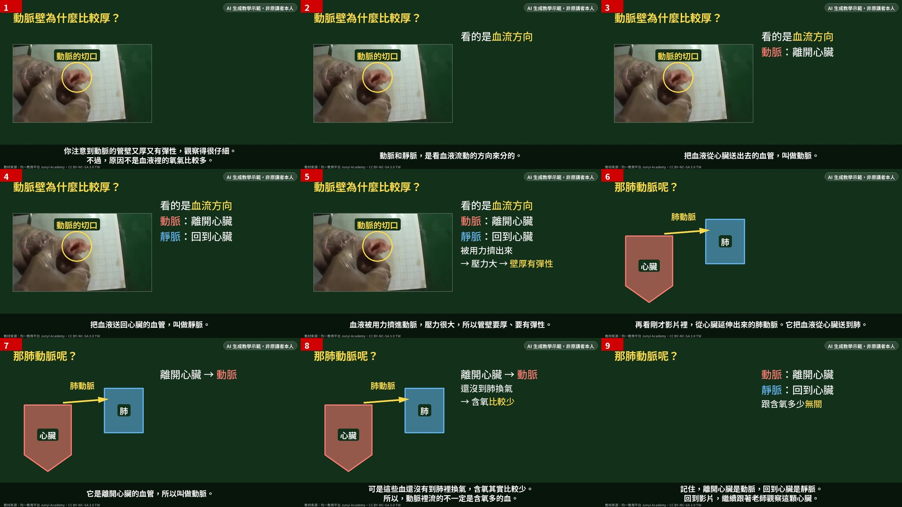
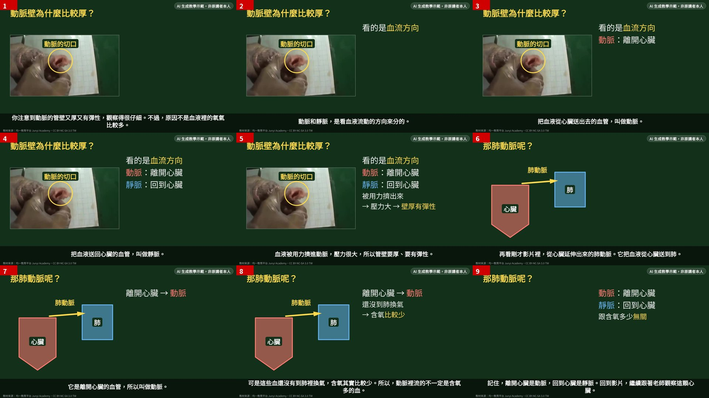

三題都用同一份 lesson.json（舊版成品裡的腳本），所以內容一樣，差別只在流程： 舊版＝edge-tts 固定聲音＋Pillow 逐格畫；中間＝只把畫面換成 Remotion；新版＝Remotion＋用 BreezyVoice 在 3090 上 clone 原片老師的聲音（每句合成 3 次、Whisper 聽回來挑最準的）。 每支影片都標示「AI 生成教學示範，非原講者本人」。本頁含原講者聲線的 clone 結果，僅供組內交流，不是繳交內容。
學生的問題（第 200 秒）：老師說昆蟲身體分頭、胸、腹三段，可是螞蟻我看起來只有兩段耶。而且蜘蛛也是小小的、也會爬，為什麼牠就不算昆蟲？


學生的問題（第 272 秒）：原來加法可以換位子湊整數，那如果題目是 1598−260+302，我是不是也可以先把 260 和 302 加起來，再用 1598 減掉？


學生的問題（第 92 秒）：動脈壁比較厚、比較有彈性，是不是因為動脈裡流的都是含氧多的血？那從心臟延伸出來的肺動脈為什麼也叫動脈？

